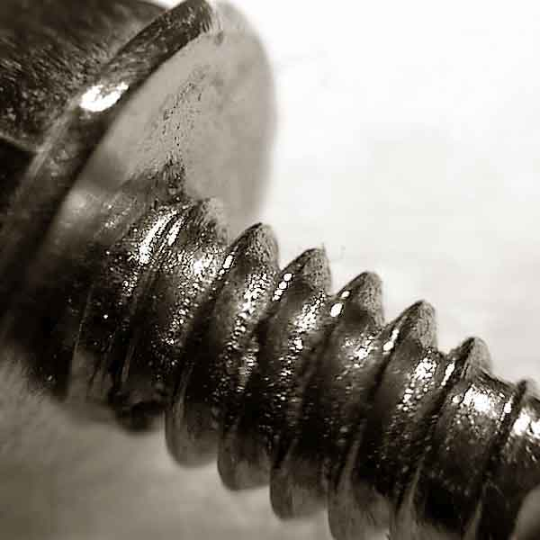
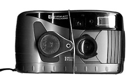
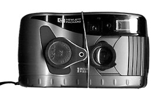

Макрофото простой камерой
Фотоаппарат HP C200 не имеет макро объектива. Поэтому я снимал через увеличительное стекло
Что это ?

Это винтик, которым крепится крышка компьютера

Чем сильнее лупа, тем больше винт

Чем сильнее лупа, тем больше винт

Комар позирует в боевой стойке.

Попробуйте сами !
 

Все фотографии выше сделаны цифровой камерой HP photosmart C200 .
Вот ещё фотографии цветов, сделанные камерой C200 через увеличительное стекло в 2000 году:


А это
Nikon CP880 без дополнительных линз